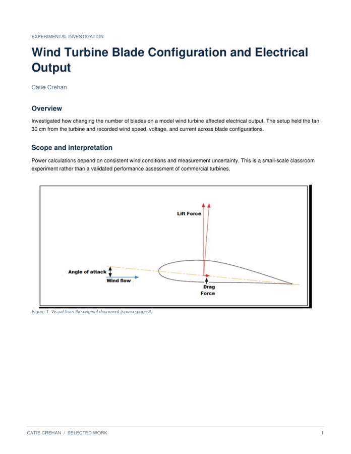

Wind Turbine Blade Configuration and Efficiency
Investigated how the number of blades on a small-scale wind turbine affects electrical output. Compared blade configurations using wind-speed, voltage, and current measurements.

About this work
Investigated how the number of blades on a small-scale wind turbine affects electrical output. Compared blade configurations using wind-speed, voltage, and current measurements.
A controlled classroom experiment using a model turbine. The original student work is preserved below, including its original wording and any limitations.
From the redesigned document
The Limitations of Wind Energy One of the largest problems with wind energy is its unpredictability. Wind speeds fluctuate throughout the day, across seasons, and depending on geographic location. Wind patterns are influenced by weather systems, thermal gradients, and geographical features, all of which can cause rapid changes in power output. For instance, at Altamont Pass, east of San Francisco, the windiest times typically occur between 2 p.m. and 6 p.m. However, peak electricity demand in San Francisco occurs between 4
The Physics Behind Wind Turbines One of the primary limitations of wind turbines is the Betz limit, which states that a turbine can theoretically extract a maximum of approximately 59.3% of the kinetic energy available in the wind passing through its swept area. But why can't we achieve 100% efficiency? Achieving 100% efficiency would mean extracting all of the wind's kinetic energy, effectively causing the air to stop moving. In practice, this would prevent additional air from flowing through the turbine. Therefore, some of the wind's kinetic energy must remain in the airflow. A wind turbine operates by transforming the kinetic energy of the wind into mechanical energy and then into electrical energy. Modern wind turbines typically accomplish this through the principle of lift.
As air flows around the curved surfaces of a turbine blade, differences in pressure and the deflection of airflow create aerodynamic forces. A portion of these forces generates torque, causing the blades and rotor to rotate. In a conventional geared turbine, the rotor is connected to a low-speed shaft, which is connected to a gearbox. The gearbox increases the rotational speed, allowing a high-speed shaft to drive an electrical generator. Inside the generator, the interaction between magnetic fields and conductive coils generates electricity through electromagnetic induction. This electricity then travels through cables down the turbine tower to a transformer, which adjusts the voltage before the electricity is distributed. To understand how we measure the electricity generated by a turbine, we first need to understand the relationship between voltage, current, and resistance.
Redesigned document
Embedded here so you can read it without leaving the website. Open full PDF in a new tab if the preview is unavailable.